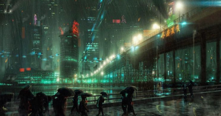

Philip K Dick
Qui est-ce ?
Philip Kindred Dick est un écrivain américain. Il appartient au mouvement du post-modernisme. Durant sa carrière il va s’orienter vers le genre fantastique et la science fiction.
Quelques informations sur sa vie
Alors qu’il n’était âgé que de quelques semaines Philip perd sa soeur jumelle. À ses 4 ans ses parents se séparent et son père mets à terme tout relation. Dès petit il est passionné de littérature et de musique. Il décide donc plus tard de faire de la littérature son métier. Il va se tourner vers la science-fiction et le fantastique. Paranoïaque et schizophrène il consomme des amphétamines pour rester productif. Cependant, son succès est incontestable. Il reçoit plusieurs prix littéraires au cours de sa vie. Par exemple le prix Hugo ou encore le prix John Wood Campbell Memorial.
Il avait son propre style d’écriture et a influencé pleins de personnes. Il a notamment influencé Charlie Kaufman (scénariste qui a beaucoup travaillé avec Spike Jonze).
Beaucoup de ses oeuvres seront adaptées au cinéma et seront populaires. Par exemple Blade Runner, Passenger, Total Recall ou encore Ghost in the Shell qui s’est inspiré de sa philosophie.
Aujourd’hui décédé, ses oeuvres continuent à faire parler de lui. Grand écrivain, le prix littéraire Philip K Dick a été créé pour lui rendre hommage.
Philip K. Dick - BBC Radio 4
Quelques livres dont il est l’auteur
Le Dieu venu du Centaure (1965)
Les androïdes rêvent-ils de moutons électriques ? (1968)
Ubik (1969)
SIVA (1981)